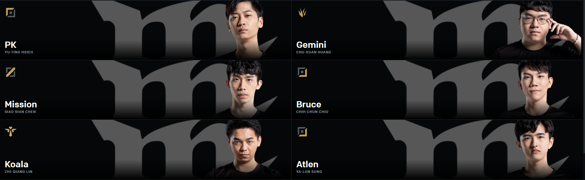
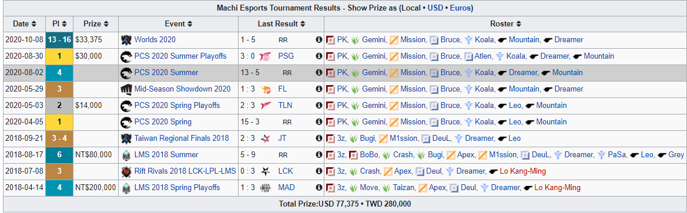

Machi Esports é uma organização profissional de esportes fundada pelo grupo de hip hop de Taiwan Machi. Tem uma divisão de League of Legends e anteriormente tinha uma equipe de Overwatch. A divisão de League of Legends de Machi tinha anteriormente uma equipe competindo na LMS e uma equipe da academia competindo na ECS chamada MachiX. Machi vendeu seu lugar na LMS para Alpha Esports no final de 2018 e, embora ainda mantenha a lista de MachiX, a ECS não está mais em operação. Em 18 de fevereiro de 2020, foi anunciado que Machi seria um dos dez parceiros de franquia da liga sucessora do LMS, a Pacific Championship Series (PCS), depois que G-Rex perdeu seu lugar e se separou.

